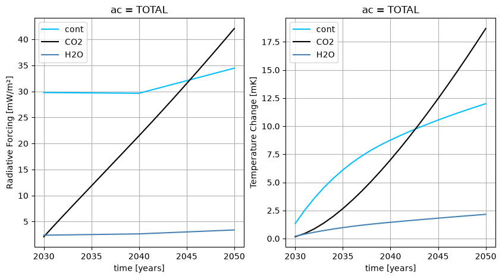

Multiple emission inventories
In this example, no time evolution file is given, but multiple emission inventories are given as input. OpenAirClim will interpolate between discrete inventory years.
Imports
If the openairclim package cannot be imported, make sure that you have
installed the package with pip or added the oac source folder to PYTHONPATH.
import xarray as xr
import matplotlib.pyplot as plt
from openairclim.utils.download_zenodo import download
import openairclim as oac
xr.set_options(display_expand_attrs=False)
<xarray.core.options.set_options at 0x7f5a2ccd0ec0>
Input files
In order to be able to execute this example simulation, two types of input are required.
Configuration file
multi_inv.tomlEmission inventories
emi_inv_20XX.nc
Emission inventories
Source: DLR research study DEPA 2050
Inventory years: 2030, 2040, 2050
Available for download in suitable OpenAirClim format
%%capture
# Download inventories from zenodo
download(
record_or_doi="https://doi.org/10.5281/zenodo.11442322",
file_glob="emi_inv_20[3-5]0.nc",
output_dir="../input/",
)
Simulation run
oac.run("multi_inv.toml")
O3 response surface is not validated!
2026-09-22 10:52:06,391 INFO main:452 (run):
-------------- OPENAIRCLIM MAIN RUN LOG --------------
oac version: 0.18.2
timestamp: 2026-09-22 10:52:06.391736
input file: multi_inv.toml
user: runner
platform: Linux 6.17.0-1022-azure
oac_premium available: False
NOTE:
OpenAirClim is currently in development phase.
The computed output is not to be used for scientific
purposes until the release of our publication.
The NOx module (output species CH4, O3, PMO and SWV)
are not validated and can produce misleading results.
------------------------------------------------------
START OF LOG
2026-09-22 10:52:06,393 INFO read_config:435 (check_config): Configuration file checked.
2026-09-22 10:52:06,393 INFO read_config:470 (create_output_dir): Create new output directory results
2026-09-22 10:52:06,469 INFO read_netcdf:204 (open_inventories): Emission inventories openend, attribute sections and time constraints checked successfully.
2026-09-22 10:52:06,470 INFO read_netcdf:257 (_resolve_aircraft_list): No ac data variable found in the emission inventories. Reverting to 'DEFAULT' aircraft from config file.
2026-09-22 10:52:06,806 INFO main:316 (_calc_sub_species_response): No subsequent species (PMO) defined in config.
2026-09-22 10:52:06,827 WARNING calc_cont:839 (check_plev_range): Found 31451 'plev' values outside the allowed range [70, 1000]. Observed plev values min=148.2, max=1013.25. Values were automatically clamped into the allowed range. Use results with caution.
2026-09-22 10:52:08,910 INFO main:524 (run): Execution time: 2.518325090408325 sec
2026-09-22 10:52:08,910 INFO main:525 (run):
END OF LOG
------------------------------------------------------
Results
Time series
Emission sums
Concentrations
Radiative forcings
Temperature changes
results_ds = xr.load_dataset("results/multi_inv.nc")
display(results_ds)
<xarray.Dataset> Size: 4kB
Dimensions: (ac: 2, time: 21)
Coordinates:
* ac (ac) <U7 56B 'DEFAULT' 'TOTAL'
* time (time) int64 168B 2030 2031 2032 2033 ... 2047 2048 2049 2050
Data variables:
emis_CO2 (ac, time) float64 336B 1.075e+03 1.101e+03 ... 1.712e+03
emis_distance (ac, time) float64 336B 6.371e+10 6.478e+10 ... 8.757e+10
emis_H2O (ac, time) float64 336B 431.4 441.9 452.5 ... 671.8 686.8
conc_CO2 (ac, time) float64 336B 0.1379 0.2718 0.4038 ... 2.823 2.984
RF_CO2 (ac, time) float64 336B 0.00208 0.004084 ... 0.03992 0.04207
RF_cont (ac, time) float64 336B 0.02978 0.02977 ... 0.03398 0.03446
RF_H2O (ac, time) float64 336B 0.002381 0.002407 ... 0.003386
dT_CO2 (ac, time) float64 336B 0.0001585 0.000452 ... 0.01868
dT_cont (ac, time) float64 336B 0.001338 0.002528 ... 0.01172 0.012
dT_H2O (ac, time) float64 336B 0.0002068 0.0003929 ... 0.002155
Attributes: (9)# Plot Radiative Forcing and Temperature Changes
ac = "TOTAL"
rf_cont = results_ds.RF_cont.sel(ac=ac) * 1000
rf_co2 = results_ds.RF_CO2.sel(ac=ac) * 1000
rf_h2o = results_ds.RF_H2O.sel(ac=ac) * 1000
dt_cont = results_ds.dT_cont.sel(ac=ac) * 1000
dt_co2 = results_ds.dT_CO2.sel(ac=ac) * 1000
dt_h2o = results_ds.dT_H2O.sel(ac=ac) * 1000
fig, ax = plt.subplots(ncols=2, figsize=(10,5))
ax[0].grid(True)
ax[1].grid(True)
rf_cont.plot(ax=ax[0], color="deepskyblue", label="cont")
rf_co2.plot(ax=ax[0], color="k", label="CO2")
rf_h2o.plot(ax=ax[0], color="steelblue", label="H2O")
dt_cont.plot(ax=ax[1], color="deepskyblue", label="cont")
dt_co2.plot(ax=ax[1], color="k", label="CO2")
dt_h2o.plot(ax=ax[1], color="steelblue", label="H2O")
ax[0].set_ylabel("Radiative Forcing [mW/m²]")
ax[1].set_ylabel("Temperature Change [mK]")
ax[0].legend()
ax[1].legend()
<matplotlib.legend.Legend at 0x7f5a2885d310>
